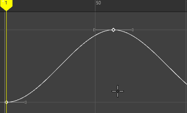

- 在“曲线图编辑器”(Graph Editor)的“关键帧”(Keys)菜单中，选择“添加关键帧”(Add Keys) >

- 添加受控关键点(Add Breakdowns)
-
受控关键点是一种与相邻关键帧保持成比例时间关系的特殊关键帧。


在第一个示例中，插入一个普通关键帧，并移动相邻关键帧。在第二个示例中，插入一个受控关键点关键帧，并移动相邻关键帧，这次，插入的关键帧会调整以适应曲线形状的变化。请注意，受控关键点关键帧为纯绿色。
- 保留切线类型(Preserve Tangent Type)
-
处于活动状态（默认）时，此设置可确保添加的关键帧影响曲线的形状，但不会更改相邻切线类型。
如果不希望新关键帧影响曲线的形状，请禁用此选项。
在第一个示例中，“保留切线类型”(Preserve Tangent Type)设置为“启用”(On)（默认），向曲线添加了关键帧，同时稍微更改其形状，而相邻切线不更改。在第二个示例中，“保留切线类型”(Preserve Tangent Type)设置为“禁用”(Off)，向曲线添加了关键帧，但曲线形状不更改。